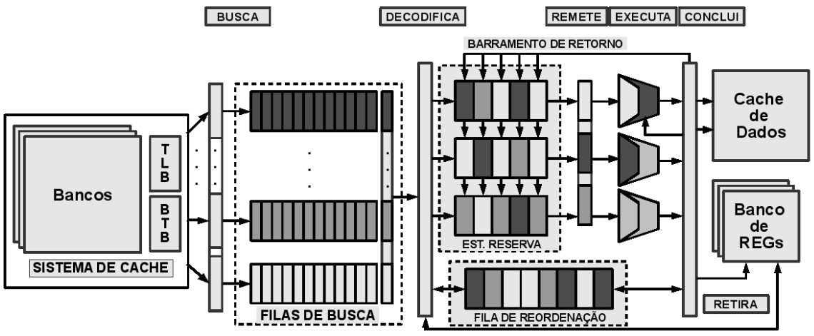
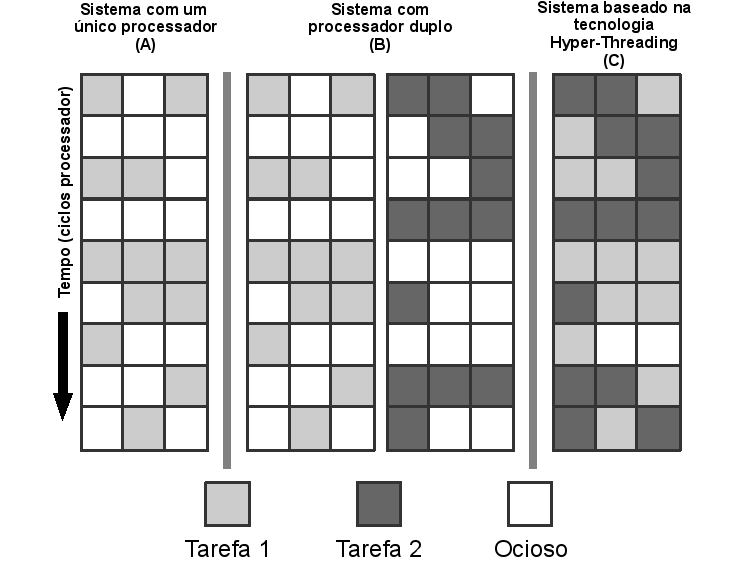
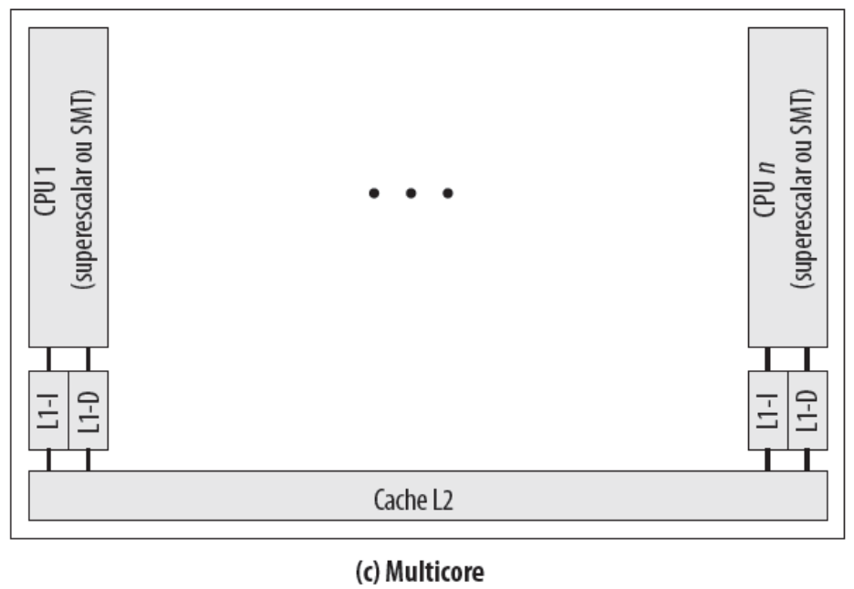
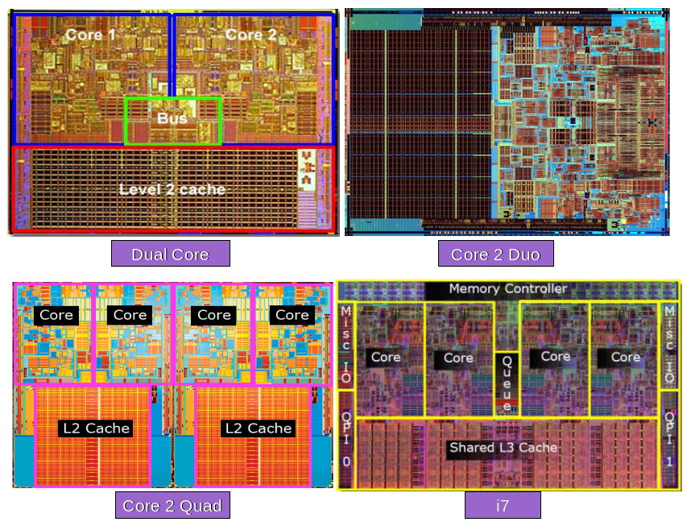
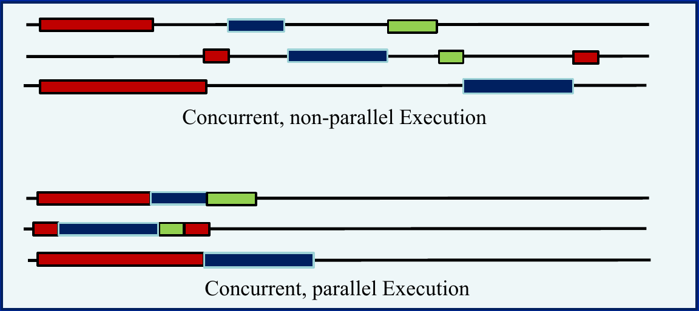
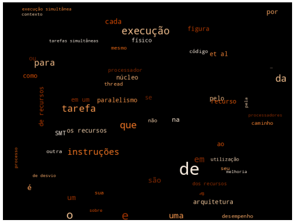

1 Introdução à Computação Paralela
Resumo: Neste capítulo são apresentados conceitos, técnicas e mecanismos de suporte do hardware e do Sistema Operacional à Computação Paralela. Falamos um pouco sobre as técnicas de melhorias de desempenho ligadas à arquitetura dos processadores até chegarmos ao multicore. Do suporte do Sistema Operacional à implementação de threads.
1.1 Introdução
As melhorias de desempenho no decorrer das últimas décadas passaram pelo aumento da velocidade de clock, otimizações do conjunto de instruções, hierarquia de memória e níveis de cache e otimizações do código com compilação.
Nos dias atuais, as frentes de pesquisa e desenvolvimento buscam soluções voltadas para a computação sustentável, com técnicas e mecanismos de gerenciamento de energia. Plataformas modernas cada vez heterogêneas, com dispositivos de computação cada vez mais distintos, como Unidades de Processamento Gráfico (GPUs), arranjos de coprocessadores e FPGAS. O que nos leva à Computação Paralela e Heterogênea.
A obtenção de melhorias de desempenho passam atualmente pelo uso de diretivas de compilação, para anotações em código legado e ferramentas como compiladores paralelizantes que com base em diretivas de compilação ou pelo uso de técnicas de paralelização automática, geram versões paralelas dos códigos.
Nesse esforço, fabricantes fornecem bibliotecas otimizadas para suas plataformas ou dispositivos que permitem uma modernização do código, pela substituição de trechos de código legado ou versões ingênuas de algoritmos, por chamadas a versões otimizadas.
1.2 Suporte do Hardware
Tecnologias mais rápidas possibilitam projetos mais eficientes. Partindo-se de um modelo básico de computação foram sendo adicionados aos projetos arquiteturais recursos para a melhoria de desempenho. Entre esses recursos, estão Hierarquia de Memória (Cache) visando mitigar a diferença de tecnologias na construção de CPUs e Memórias. A divisão do ciclo de execução de uma instrução em estágios de um pipeline, que levou a técnicas de previsão de desvios para evitar penalidades de busca de instruções em caminhos errados.
As Arquiteturas Superescalares buscam o Paralelismo em Nível de Instrução (ILP) com escalonamento dinâmico de instruções (Tomasulo 1967) e o mecanismos para a execução fora de ordem. Porém, ainda que processem múltiplas instruções ao mesmo tempo, elas ainda sofrem com ineficiência e subutilização de recursos. O número de instruções executadas por ciclo (IPC) não é muito alto, isto é, hardware fica ocioso.
Para solucionar isso e maximizar o desempenho, surgiu a execução simultânea de diferentes tarefas (como o Simultaneous Multithreading - SMT), uma abordagem que otimiza o uso do processador ao aproveitar tanto o paralelismo das instruções quanto o das próprias tarefas, Paralelismo em Nível de Tarefas (TLP). A execução de múltiplas tarefas diferentes, isto é, aplicações diferentes, garante uma ocupação mais efetiva dos recursos do processador que ficariam ociosos, podem ser utilizados pelas instruções de outras tarefas.
A multiplicidade de núcleos trazida pelos processadores multicore garante um paralelismo em núcleos de processamento diferentes.
1.2.1 Arquiteturas Superescalares
As arquiteturas superescalares expandiram a capacidade em largura através de pipelines distintos para cada unidade funcional, fazendo com que múltiplas instruções sejam buscadas, decodificadas e despachadas para a execução. Mesmo as arquiteturas superescalares, ainda não atingem níveis de paralelismo desejados e acabam sendo subutilizadas ou utilizadas ineficientemente.
Diante da necessidade de melhoria no desempenho e da utilização mais eficiente dos recursos, surgiu a idéia de remessa e execução de instruções de tarefas distintas, caracterizando a execução simultânea de tarefas com o objetivo de intensificar a utilização de recursos e explorar o grau de paralelismo existente entre essas instruções e ainda o grau de paralelismo existente entre tarefas.
O conceito de superescalar é implementado na maioria dos processadores modernos, dando-lhes a capacidade de explorar o paralelismo no nível de instruções (ILP). Em uma arquitetura superescalar típica, o processador busca e decodifica várias instruções tentando garantir um fluxo contínuo de instruções prevendo antecipadamente os resultados de instruções de desvio. As instruções são analisadas e as dependências de dados e de controle são reduzidas, e instruções são despachadas e distribuídas para as estações de reserva associadas e na sequência são emitidas para a execução em suas respectivas unidades funcionais (Smith and Sohi 1995).
A execução em paralelo baseia-se na disponibilidade de operandos ao invés de restringir-se à sequência original do programa, proporcionando um escalonamento dinâmico de instruções, no qual os operandos pendentes em outras instruções são atualizados à medida em que são calculados, permitindo que a execução das instruções que aguardam esses operandos possa então prosseguir. A arquitetura utiliza-se de uma estrutura de reordenação, um buffer ou uma fila, para que após a execução e obtenção dos resultados, o estado do programa seja finalizado na mesma ordem estabelecida pelo código, mantendo assim a semântica do código original.
A execução fora de ordem é obtida sobre as instruções que estão com os operandos prontos, não respeitando a ordem original do código, mas sim o fluxo de dados. Esse paralelismo é implícito no código e ocorre de forma transparente ao usuário, não sendo necessário recompilar as aplicações existentes para a arquitetura alvo.
A execução de instruções em paralelo envolve questões relacionadas à dependência de controle e de dados entre as instruções, ao hardware para suportar a execução de múltiplas instruções em paralelo, às estratégias para determinar quando uma instrução está pronta e à passagem de valores entre instruções que estão em execução.
Instruções de desvio condicional podem levar o fluxo de execução a um caminho tomado pela decisão das técnicas de previsão de desvios, de forma que as instruções executadas desse caminho são executadas em um contexto especulativo, podendo mais tarde serem descartadas ou efetivadas, dependendo da conformidade da previsão. As operações realizadas especulativamente são efetivadas no estado real da máquina somente quando as previsões de desvios são confirmadas. O controle da visibilidade desse novo estado e da manutenção da aparência de execução seqüencial sem prejuízos para a semântica do código original é uma tarefa complexa, exigindo para isso um hardware também complexo.
As técnicas de previsão de desvio tentam prever o caminho a ser seguido pelo fluxo de execução, procurando minimizar os erros de forma que sempre instruções de um caminho correto sejam buscadas, decodificadas e executadas.
1.2.2 Arquiteturas SMT
A denominação Simultaneous Multithreading (SMT) teve origem na publicação de (Tullsen et al. 1995), embora o conceito tenha sido apresentado por idéias semelhantes em trabalhos anteriores como a arquitetura Simultaneous Instruction Issuing (Hirata et al. 1992) e a arquitetura chamada Multistreamed Superscalar (Yamamoto et al. 1994), ambos com a capacidade de executar instruções provenientes de diferentes fluxos simultaneamente.
As arquiteturas SMT têm como objetivo a execução simultânea de tarefas, remetendo à execução instruções de diferentes tarefas durante o mesmo ciclo do processador. Cada tarefa detém, durante a execução, o uso de alguns recursos que constituem o seu contexto de execução, compartilhando diversos outros com outras tarefas em execução. O contexto de cada tarefa é formado pelo conteúdo dos registradores que estão sendo utilizados, pelo seu contador de programa e pelos recursos que estão sob seu domínio.
Através do embaralhamento das instruções das diversas tarefas em execução simultânea, a arquitetura explora o paralelismo em nível de tarefas (TLP), em adição ao ILP, o qual é típico das arquiteturas superescalares convencionais. Esta característica proporciona melhor aproveitamento dos recursos existentes, pois aqueles que estariam ociosos com a execução de uma única tarefa poderão ser aproveitados pela execução simultânea de outras tarefas.
A execução de tarefas simultâneas garante um paralelismo maior em relação à execução convencional, permitindo uma exploração maior dos recursos do hardware. A unidade de busca, entre outros recursos é compartilhada pelas diversas tarefas, permite que as instruções das tarefas sejam buscadas e inseridas no caminho de execução, onde a coexistência de vários contextos permite aproveitar melhor as oportunidades de execução enquanto as tarefas concorrentes alternam seus momentos de cpu-bound e io-bound. A Figure 1.I apresenta o projeto arquitetural de uma arquitetura SMT.

A Figure 1.II apresenta a ideia geral da utilização de recursos na execução em um núcleo SMT, fazendo um comparativo com a utilização dos recursos na execução em um processador de núcleo simples e em um processador de núcleo duplo. Os recursos são representados pelos quadrados, as linhas representam os recursos que podem ser utilizados em paralelo e as colunas mostram a utilização efetiva de cada recurso no decorrer do tempo.

O compartilhamento de recursos e estruturas internas do processador pode ser feito de diversas maneiras e da forma que melhor se adequar ao projeto arquitetural. Por exemplo, a implementação da Intel, denominada tecnologia Hyper-Threading, implementa um pipeline para a execução simultânea de duas tarefas através da duplicação do estado arquitetural, como sendo dois processadores lógicos, porém a execução das instruções é simultânea sobre os recursos compartilhados do mesmo processador físico (Marr et al. 2002), sendo vistos pelo SO como sendo dois processadores físicos.
A tecnologia Hyper-Threading (HT) da Intel (Marr et al. 2002) executa duas tarefas simultaneamente, enquanto que na proposta inicial do conceito SMT (Tullsen et al. 1995) foram realizados experimentos com até 8 tarefas, o que leva a crer que é alta a complexidade envolvida no controle e no compartilhamento de recursos.
A tecnologia HT faz com que um único núcleo físico seja visto como múltiplos núcleos lógicos, pois há uma cópia do estado arquitetural para cada processador lógico que compartilha os mesmos recursos físicos durante a execução. Esses núcleos lógicos são percebidos pelo Sistema Operacional (SO) como se fossem núcleos físicos, podendo escalonar processos ou tarefas para eles como se estivessem em um sistema multiprocessado.
A primeira implementação da HT foi feita para a família de processadores Intel Xeon, com dois processadores lógicos por processador físico. Sua implementação custou menos de 5% no aumento na área do chip e nos requisitos de consumo de potência, fornecendo uma melhoria considerável no desempenho.
O estado arquitetural mantido por cada processador lógico é formado pelos registradores de propósito geral e de controle, por registradores relacionados ao controlador de interrupção e alguns registradores de estado. Todos os outros recursos do núcleo físico são compartilhados, tais como caches, unidades de execução, previsores de desvios, lógica de controle e barramentos.
Cada processador lógico tem seu próprio controlador de interrupção (APIC), favorecendo a idéia de que para o SO é como se fosse um sistema com dois processadores físicos. Assim, interrupções enviadas via software (trap) ou via hardware são tratadas somente pelo processador lógico ao qual são endereçadas.
Um processador lógico pode ter seu funcionamento suspenso temporariamente enquanto falhas na cache e erros de previsão de desvios são tratados ou enquanto aguarda por resultados de instruções executadas anteriormente. Porém, devido ao particionamento dos recursos ser estático, cada tarefa tem seu conjunto particular de recursos. Em um cenário de execução com uma única tarefa, os recursos que seriam compartilhados, provavelmente serão subutilizados momentaneamente, mas este fato não poderá prejudicar as demais tarefas que vierem a ser executadas simultaneamente. Um dos objetivos de SMT é que contextos com uma única tarefa ativa tenham o mesmo desempenho com a tecnologia HT, como teriam em um processador sem essa tecnologia.
1.2.3 Arquiteturas de Múltiplos Núcleos com SMT
Com o surgimento de arquiteturas de múltiplos núcleos em um único processador físico ou Chip Multiprocessors (CMP) (Olukotun et al. 1996), houve certa redução nas pesquisas em SMT. Entretanto, devido aos limites de desempenho alcançado por esta nova abordagem, o desejo atual é que os processadores passem a combinar as duas estratégias em uma única arquitetura. Com isso, surgem as arquiteturas Chip Multi-Threaded (CMT) (Spracklen and Abraham 2005) como sendo processadores que suportam a execução simultânea de muitas tarefas via combinação do suporte a múltiplos núcleos com SMT. A aplicação de SMT em cada núcleo é feita para os mesmos fins que em processadores de núcleo único, melhor aproveitando os recursos e as oportunidades de execução durante a latência de operações de memória. A Figure 1.III apresenta o diagrama de um processador multinúcleos.

A Figure 1.IV apresenta algumas imagens de chips de processadores que conhecidos.

1.3 Suporte do Sistema Operacional
O Sistema Operacional (SO) é o responsável pelo gerenciamento de recursos disponíveis na máquina, gerenciamento e escalonamento dos processos.
Estamos em um ambiente multiprogramado e multiprocessado, mas nem sempre foi assim. Lá no começo, podíamos encontrar a seguinte situação: uma máquina com apenas um processador, com apenas um núcleo, o que conhecemos por single core. Além desses recursos de hardware restrito, se comparado com a situação atual, poderia também ter um Sistema Operacional monoprogramado, isto é, que executa apenas um programa por vez, exemplo, MS-DOS.
Em um ambiente mais comum de hoje, de hardware com múltiplos elementos de processamento, de Sistema Operacional capaz de gerenciar a execução de múltiplos processos, temos a possibilidade de executar diversos aplicativos ao mesmo tempo: browser, player de músicas, editor de textos… O que antes tinha uma executação intercalada, através do compartilhamento de tempo.
Quando executamos um programa qualquer em uma máquina, um processo será criado. Então processos são programas executando em um computador. Cada processo tem um identificador, um pid e vai executar o código associado à sua imagem/segmento de código.
O Código 1.II apresenta um exemplo de código que recupera os identificadores relacionados ao processo.
exemplo-thread.c
#define _GNU_SOURCE
#include <stdio.h>
#include <unistd.h>
#include <sys/syscall.h>
#include <sys/types.h>
#include <pthread.h>
int main() {
printf("Main PID: %d, PPID: %d, Main TID: %ld, TID: %ld\n",
getpid(), getppid(), syscall(SYS_gettid), pthread_self());
return 0;
}exemplo-pid-ppid.c
getpid(): Returns the PID of the calling process.
getppid(): Returns the parent’s process ID.
syscall(SYS_gettid): Returns the Linux kernel thread ID (TID), which uniquely identifies the individual thread.
pthread_self(): Returns the POSIX thread ID (pthread_t), which can be printed as an address or number depending on the system implementation (cast with (unsigned long)pthread_self()). [, 2, 3, 4, 5]
exemplo-thread.c
#include <stdio.h>
#include <stdlib.h>
int main( ){
int pai;
int valor = 0;
pai = fork( );
if (pai){ /* este trecho é executado pelo pai */
printf("Eu Sou o Processo Pai %d \n", pai);
valor = 5;
printf("Valor: %d \n", valor);
}
else
{ /* este trecho é executado pelo filho */
printf("Eu Sou o Processo Filho %d \n", pai);
valor = 10;
printf("Valor: %d \n", valor);
}
exit(0);
}Outros recursos pode ser obtidos do gerenciamento feito pelo SO, utilizando chamadas de sistema. Todos os processos interagem com o Sistema Operacional por meio de chamadas ao sistema.
Quando abrimos um terminal (prompt de comando) e executamos um comando qualquer, como por exemplo, o pwd. O processo do programa terminal é duplicado através da chamada de sistema fork e depois executa uma outra chamada de sistema da família execv para trocar a imagem do código do processo clonado, para que execute o código do programa desejado.
$ pwd
/home/rag
$ A chamada fork cria um processo filho que diferencia-se a partir do processo pai somente em seus PID e PPID. Arquivos abertos, sinais pendentes e todo o espaço de endereçamento do processo pai não são herdados pelo filho. Em caso de sucesso, a PID do processo filho é devolvido para o pai, e um \(0\) é retornado para o filho. Caso contrário, um \(-1\) será retornado no contexto pai, e nenhum processo filho será criado, e um erro será selecionado adequadamente.
O ?lst-mycode
#| lst-label: lst-mycode
#| lst-cap: "An example script"
x = [1, 2, 3]
print(x)Exemplo de fork.
#include <stdio.h>
#include <stdlib.h>
int main( ){
int pai;
int valor = 0;
pai = fork( );
if (pai){ /* este trecho é executado pelo pai */
printf("Eu Sou o Processo Pai %d \n", pai);
valor = 5;
printf("Valor: %d \n", valor);
}
else {/* este trecho é executado pelo filho */
printf("Eu Sou o Processo Filho %d \n", pai);
valor = 10;
printf("Valor: %d \n", valor);
}
exit(0);
}Exemplo de execv.
Para alocar memória, sua aplicação faz uma chamada à função malloc(...) da biblioteca, que por sua vez faz uma chamada de sistema para alocação de memória no segmento de dados, a heap. Para alocações cotínuas e pequenas a chamada brk / sbrk são utilizadas e deslocam o fim do segmento de dados do processo, já para alocações grandes, a chamada mmap é usada. Essa chamada cria um novo mapeamento de memória virtual independente no espaço de endereçamento do processo. No Linux, o limite padrão para disparar o mmap geralmente é de 128 KB (configurável via M_MMAP_THRESHOLD).
O SO tem recursos para a criação de novos processos Desde memória às unidades de processamento.
A família de funções exec substitui a imagem do processo atual por uma imagem de um novo processo.
#include <unistd.h>
#include <stdio.h>
int main(){
printf("Antes do exec\n");
// execl("/bin/ls", "/bin/ls", "-r", "-t", "-l", (char *) 0);
printf("Depois do exec\n");
return 0;
}Note que a linha que contém a chamada à função execl(...) está comentada, assim as mensagens “Antes do exec” e “Depois do exec” serão escritas na tela.
:::
Conforme apresentado na ?nte-comando-compilacao, bla
#include <unistd.h>
#include <stdio.h>
int main(){
printf("Antes do exec\n");
// execl("/bin/ls", "/bin/ls", "-r", "-t", "-l", (char *) 0);
printf("Depois do exec\n");
return 0;
}Filename
Conforme apresentado no Código 1.IV, o programa é compilado utilizando a flag -pthread.
Terminal
$ gcc -pthread programa.c -o programa
$ ./programa
Saída do programa aqui...O Código 1.VI apresenta um exemplo de código que utiliza pthreads.
Exemplo de Thread
exemplo-thread.c
#include <stdio.h>
#include <stdlib.h>
int main( ){
int pai;
int valor = 0;
pai = fork( );
if (pai){ /* este trecho é executado pelo pai */
printf("Eu Sou o Processo Pai %d \n", pai);
valor = 5;
printf("Valor: %d \n", valor);
}
else
{ /* este trecho é executado pelo filho */
printf("Eu Sou o Processo Filho %d \n", pai);
valor = 10;
printf("Valor: %d \n", valor);
}
exit(0);
}Bloco de Código com callout.
$ gcc -pthread programa.c -o programa
$ ./programa
Executando em paralelo...1.4 Prática
- Com base nos exemplos de
forke de comunicação entre processos altere o código do soma de vetores para dividir o trabalho entre mais processos.
Thread: parte de um programa. Processo Leve. Tarefa.
Cada processo pode possuir uma ou múltiplas threads.

Exemplos:
- Um editor de textos, várias tarefas (typing, spell checking, printing…)
- Um servidor web, cada requisição atendida por uma thread.
Em um computador convencional (single core):
- Cada processo gera pelo menos uma thread (fluxo de execução principal).
- Um processo é escalonado para execução, logo uma thread está em execução por vez.
- Quando uma thread pára (por exemplo, devido a um page fault:
- O estado da thread é guardado (registradores, …)
- O estado de outra thread em espera é carregado no processador e inicia-se sua execução.
- O que é chamado de troca de contexto (context switching).
- Para o usuário parece que todas as threads executam simultaneamente.
Em um computador com processador multicore tem-se a possibilidade de paralelismo físico.
Concorrência: Múltiplas tarefas estão logicamente ativas em um mesmo momento.
Paralelismo: Múltiplas tarefas estão realmente ativas em um mesmo momento.

1.5 Considerações Finais
1.6 Word Cloud
